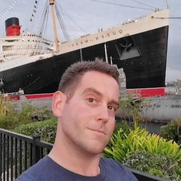

Class 5b Lab

Yes, we started off with a Pop-Quiz.
But in case you didn't know him that well, Here's your chance!
Ken grew up all over the West Coast and recently completed a tour with the Navy in Delaware.
However, he has since returned to Washington state, which he considers home.
It has been quite a journey, but with his trusty dog Moxie at his side, he can't help but be optimistic.
Joining Code Fellows has been exciting! The people, the focus on the topic, the exercises.
It really puts the neurons to work for Ken.
He does have some experience with programming, primarily Javascript, Python, and R.
His favorite, at the moment being Python.
Mid-Bio Joke Break!
Q: What is an astromech droid's favorite programming language?
A: Jawa-script.
Hehehe.
Now, back to the bio!
In order to really do well in class, it helps to study, take notes, and keep up with the material.
However, as we all learned, self-care is also important.
His favorite programming beverage is fizzy lime water.
It keeps him hydrated, but without the extra jitters of caffiene.
As for his favorite programming snack: that has to be Cheeze-Its.
They are tasty, shelf-stable, and always emotionally available.
Well, that is it for now! Looking forward to learning more about you!